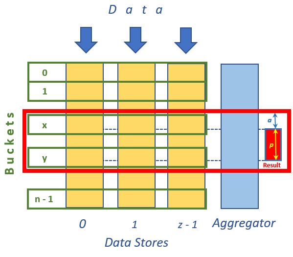

Title: Sorted Page from Unsorted Distributed Data Author: Igor Ladnik Email: ladnik@hotmail.com Member ID: 47188 Language: C# 4.5 Platform: Windows 10; .NET 4.5 Technology: Plain C# Level: Beginning Description: Algorithm and code to create sorted page out of several large volatile unsorted data sets. Section General Programming - Algorithms & Recipes SubSection Sorting License: CPOL
Recently in my practical work I came across the following problem.
There are several Data Stores located in different worker machines, each of which has unsorted set of objects of the same type.
The sets are large and volatile meaning that items often are inserted to / removed from the sets (we control insertion / removal procedure).
The system should response to the following query:
present in another Aggregator machine a page of p objects of merged sorted list of objects from all sets with some offset
from the beginning of the combined sorted list.
Such problem arises, for example, when user wants to see (either by pages or in scrollable table) sorted merged list of frequently
changed objects scattered over different computers.
Straightforward solution to the problem is to
- copy and merge sets from all Data Stores to Aggregator machine,
- sort the combined set to a global sorted list, and
- take p objects starting with offset object.
This naive solution does not suit to our case with large and frequently updated Data Stores
due to massive objects transfer from Data Stores to Aggregator on each query.
A better solution should reduce number of transferred objects as much as possible.
Although the above problem looks fairly standard, I failed to find its documented solution in Internet, let alone its code implementation.
Proposed solution is following. Objects in all Data Stores are categorized according to some simple rules to certain buckets.
Rules to place an object to a bucket are uniform for all Data Stores. Categorizing procedure should be relatively simple and inexpensive.
For example, if our objects are words then division to buckets may be done by the first or by two leading letters of the word. To solve our problem
we
Sk - number of all objects in the first k buckets (numbers between 0 and k - 1) in all Data Stores.
Sx ≤ offset & Sx+1 > offset
(1)
Sy ≤ offset + p & Sy+1 > offset + p
(2)
a = offset - Sx
(3)
The following figure illustrates the above algorithm.

In the figure data are inserted to / remove from z Data Stores 0, 1, ..., z - 1.
Objects in the Data Stores categorized in n buckets numbered 0, 1, ..., n - 1.
Red frame encompassing buckets between x and y defined by conditions (1) and (2) depicts content transferred to Aggregator.
Reg rectangle Result shows final result page of p objects starting at object a of merged sorted list in Aggregator.
Number a is calculated by (3).
The algorithm is implemented in plain C# in assembly (dll) AggregatedSortedPage. The assembly contains
interface IDataStoreBucketsContainer<T>, where
T is a type of the objects to be sorted,
and
classes DataStoreBucketsContainer<T> (implementing the interface),
Aggregator and
Query.
Interface IDataStoreBucketsContainer<T>
provides methods to get buckets
length
GetBucketsLength()
and
content
GetBucketsContent().
Class DataStoreBucketsContainer<T> implementing
interface IDataStoreBucketsContainer<T>,
dealls with real Data Store and contains buckets in its dictionary. It is also able to add / remove objects
to / from its buckets.
In order to get buckets length and content Aggregator has to call methods
of IDataStoreBucketsContainer<T> interface.
If Aggregator and
DataStoreBucketsContainer<T>
are located in the same process (like in our rather illustrative and not quite realistic sample)
then Aggregator calls methods of
DataStoreBucketsContainer<T> directly.
But in reality Aggregator queries Data Stores from different processes.
For that purpose appropriate proxy implementing
interface IDataStoreBucketsContainer<T> is required (not shown in this code sample).
The proxy is capable to call methods of remote
DataStoreBucketsContainer<T> object from the
Aggregator's process.
Appropriate infrastructure should be provided in order to support these inter-process calls.
Aggregator is a stateless static class.
Its the only public method
GetPage<T>() takes as parameter instance of
IDataStoreBucketsContainer<T> (either proxy or real
DataStoreBucketsContainer<T>),
object implementing
System.Collections.Generic.IComparer<T> interface
for comparison of T type objects in order to sort them,
and query object of
Query
type.
Described above software does not impose any requirements on sortable objects of type T.
Rules for distibution them to buckets, objects comparison and queries are separated from both
the objects' type and algorithm implementation. To serve query on each index (criterion)
two outer entities should be provided, namely,
These metdods are used in different places since in real life classes
DataStoreBucketsContainer<T> and
Aggregator run in different processes.
Class DataStoreBucketsContainer<T> provides method
GetInfo() for its buckets inspection.
It returns tuple containing list of length of each bucket in the Data Store,
average number of objects and ratio of buckets length to the average.
Although this method is not used for directly for the problem solution, it may be useful
to optimize bucket distribution rules.
In order to test assembly AggregatedSortedPage console application TestApp is used.
Class Item represents the sorting objects type.
It is sorted by alphabetic order of its public string property
Word.
Class ComparerItem contains both
method to categorized Word property
to buckets and to comparer two words implementing interface
System.Collections.Generic.IComparer<T>.
The buckets roughly follow the first letter of a word although some letters
are combined to a single bucket where as some others are split to two buckets (in the latter case
two leading letters are analyzed).
Text file t8.shakespeare.txt containing all writings of William Shakespeare downloaded from
here
is used as words source with auxiliary symbols like commas, apostrophs, etc. removed.
Only distinct words are taken for the test (no words duplications).
Empty strings are also taken out of the list.
After these modifications there are 29541 words remaining in the list.
File should be downloaded and placed either in folder with TestApp.exe
or in folder of TestApp.csproj. The file name in hardcoded in Program.cs
(of course, any other large enough text file may be used for testing - just name should be changed in the code).
To facilitate subsequent check for correctness of queries execution all items in the list were
alphabetically sorted and their serial numbers and Data Stores were placed in their appropriate properties
used for testing purposes and described below.
Class Item has two auxiliary properties used only for testing purposes.
Property DataStore indicates Data Store containing this item, and
property Num presents serial number of the item in full sorted list
(i.e. list of all distinct words in the file sorted in alphabetic order).
These two properties allow us effectively check result of our query execution.
Please note that in real life the properties are of no use.
For test we equally devide all our words to three Data Stores and execute query with
offset = 15000 and
p = 25.
This query is executed first for the set of words without change and then with a word adding to and removal from
one of the Data Stores. Results of query on unchanged words set is presented below (as you can see some of words
spell incorrect since symbols like apostrophs were removed):
We got COMBINED SERIAL NUM. and DATA STORE columns contents due to auxiliary properties of
Item class. From above result we see that our query was fulfilled correctly
and words come from all Data Stores.
To increase effectiveness of the algorithm each bucket should contain relatively small number of objects
(of course, number of buckets should be reasonable).
This allows system to transfer less objects from Data Stores to Aggregator and
sort less objects by Aggregator for final combined list.
In the other hand, rules for objects distribution to buckets should be simple and inexpensive to reduce
calculation and locking time in case of objects massive adding.
I'd like to thank Shlomi Levy for the problem statement and useful discussion on the subject.
Solution
Sotfware Implementation
Code Sample
Data Stores Lists Aggregator
start: 15000, num: 25
COMBINED SERIAL NUM. NUM. IN PAGE DATA STORE WORD
15000 0 2 loaf
15001 1 0 loam
15002 2 1 loan
15003 3 1 loath
15004 4 2 loathd
15005 5 0 loathe
15006 6 1 loathed
15007 7 0 loather
15008 8 0 loathes
15009 9 1 loathing
15010 10 0 loathly
15011 11 2 loathness
15012 12 2 loathsome
15013 13 1 loathsomeness
15014 14 2 loathsomest
15015 15 1 loaves
15016 16 0 lob
15017 17 2 lobbies
15018 18 1 lobby
15019 19 1 local
15020 20 0 lochaber
15021 21 0 lock
15022 22 1 lockd
15023 23 2 locked
15024 24 0 locking
Discussion
Thanks